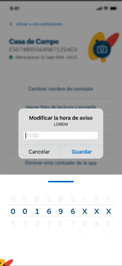

Desde la pantalla de Mis contadores, se puede acceder a la pantalla de Histórico de lecturas, donde para el contador seleccionado se muestra el histórico de todas las lecturas y fotografías que se han enviado desde el móvil desde el que se está consultando.
La información que se visualiza es:
Nombre del contador
CUPS del contador
Fecha de la última lectura registrada
Icono con una máquina de fotos dibujada, que al pulsar lleva al primer paso de toma de lectura (descrito en el apartado anterior).
Histórico de lecturas
Fotografía en miniatura (al seleccionarla, se muestra la imagen ampliada)
Fecha en la que se envió la lectura y fotografía
Estado de validación de la lectura enviada (posibles valores: En validación, Recibida, Rechazada)

Al introducir la nueva hora y aceptar,
-se actualiza el campo “Hora notificación aviso próxima lectura” de la entidad Contador
-se llama al servicio del backoffice PUT /api/Profile/{id} para que actualice en la entidad PROFILE del backoffice el campo prf_notification_hour donde se guarda la hora de la notificación, con la siguiente información:
-identificador del perfil que se quiere actualizar
-prf_notification_hour → nueva hora para la notificación
Desactivar aviso bimensual -> esta opción se muestra solo si se ha activado previamente el aviso y aparece un pop-up donde se solicita la confirmación.
Si se confirma,
-se actualiza el campo “Permite notificaciones de aviso de próxima lectura” de la entidad Contador con valor false
-se llama al servicio del backoffice PUT /api/Profile/{id} para que actualice en la entidad PROFILE del backoffice el campo prf_allow_notifications de la entidad PROFILE , con la siguiente información:
-identificador del perfil que se quiere actualizar
-prf_allow_notifications → valor false